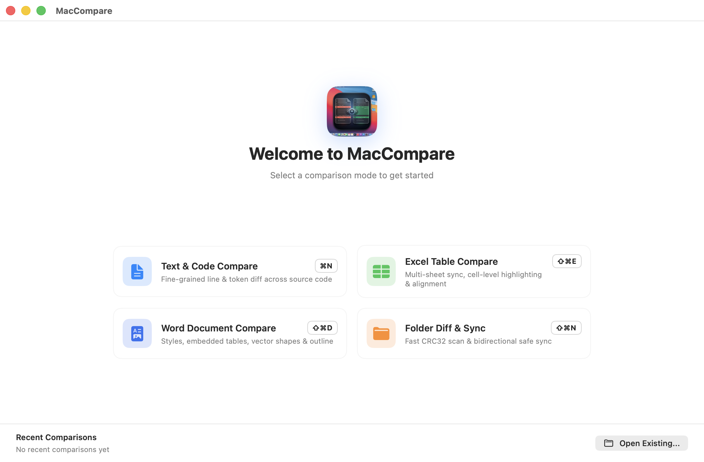

跨平台双生态原生 文件比对与合并套件
MacCompare (macOS SwiftUI / AppKit) 与 WinCompare (Windows 11 WinUI 3) 搭载同一套高吞吐 Rust 差分底座。毫秒级比对速度、双模 AI 代码意图总结、海量表格流式视口分页与纯粹原生桌面质感。
双端原生技术栈与底座共享核心
两款各自平台纯原生打造的界面客户端，搭载同一个 Rust 2024 高性能算法底座，毫秒级比对速度与 100% 算法对齐。
MacCompare
macOS Native Edition- 原生界面：SwiftUI + AppKit 深度适配
- 架构形态：Universal Binary 2 (Apple Silicon & Intel)
- 打包分发：DMG 镜像、免安装 Zip、官方 Homebrew Tap
- 命令行工具：
mcdiff（内置 Git diff/merge 接入）
Shared Core
Rust 2024 Workspace- 核心引擎：diff-core（Myers 算法与 3-Way Merge）
- 表格核心：excel-diff-core（calamine, memmap2, ahash）
- 并发扫描：fs-scanner（rayon 并发与硬件加速 CRC32）
- 跨语言调度：C-ABI / P-Invoke 零拷贝内存映射调度
WinCompare
Windows 11 Native Edition- 原生界面：WinUI 3 + Fluent Design 云母质感
- 架构形态：Windows 11 / 10 (x64 与 ARM64)
- 打包分发：WiX v4/v5 MSI 原生安装向导、绿色便携 Zip
- 命令行工具：
wincmp（自动注册桌面快捷方式与 PATH）
沉浸式双端界面与深浅外观实时演示
自由切换 macOS 与 Windows 11 原生实测截图，左右拖动滑块实时感受深浅色模式。

专为极速、全要素对比与极致优雅打造
双生态原生级响应速度与端侧大模型赋能，兼顾直观的视觉反馈与企业级生产力。
端侧离线与云端双模 AI 智能助手
集成 Google Gemma 3（1B 与 4B）端侧模型，100% 离线隐私推理，零代码外泄；同时兼容 DeepSeek、OpenAI 与本地/局域网 Ollama。一键提炼代码改动意图，自动生成标准 Conventional Commit 提交信息。
Rust 2024 高通量核心与双引擎架构
基于 Rust 差分计算底座，Myers 算法与 Token LCS 实现毫秒级行级与内联字符高亮；双端均支持偏好设置动态切换 Rust 极速底座与系统原生引擎，算法 100% 对齐。
海量表格与多工作表结构化比对
支持 .xlsx/.xlsb/.xls/.csv/.tsv 全系列表格。Calamine 与 Memmap2 零拷贝解析，64位行哈希秒级跳过无差异行，视口分页保持 30MB 极低内存，主键 Hash Join 极速对齐与浮点容差过滤。
Word 文档结构化全要素比对
支持 .docx/.doc 段落富文本样式流（字号、粗体、斜体、下划线、颜色）、内嵌表格网格单元格追踪、多媒体附件 SHA-256 指纹比对与标题大纲快速导航。
毫秒级多线程文件夹对比与同步
基于 Rayon 与硬件加速 CRC32fast 并发扫描，时间戳/大小快速对比与深度哈希指纹校验，规则化双向同步并提供演练预览 (Dry-Run) 安全机制。
Git 三向冲突合并 (3-Way Merge)
可视化三栏对齐 Local vs. Base vs. Remote，智能自动融合非冲突代码变更，提供采纳本地、保留双方、采纳远端一键解决与上下冲突快捷跳转。
启动欢迎主页与持久化历史记录
2x2 黄金对称四大模式直达、全局持久化历史会话一键恢复、左右独立拖放区 (Drop Zone) 与单侧文件即时预览体验。
智能对齐幻影行 (Phantom Lines)
像素级直观的空白占位对齐与字符级差异高亮，差异块一目了然，支持左右双向差异合并采纳与快速定位。
原生多标签与自由分拆组合
原生窗口标签体系，支持自由拖拽拆分与合并窗口，支持键盘快捷键无缝循环切换多任务对比标签。
终端开发者生态与 Git 深度整合
内置 macOS mcdiff 与 Windows wincmp 命令行工具，开箱即用无缝对接 git difftool 与 git mergetool。
原生标准化打包与一键更新
macOS DMG 镜像与 Homebrew Tap 分发；Windows WiX v4/v5 原生 MSI 安装向导与便携版 Zip，内置多语言更新日志感知的在线自动更新。
系统级原生质感与自适应深浅外观
macOS SwiftUI / AppKit 与 Windows 11 Fluent 云母设计，内置中、英、日三语支持，完美适配系统主题自适应与快捷切换。
终端命令行与 Git 工具生态深度整合
内置 mcdiff (macOS) 与 wincmp (Windows)，在终端中随时唤起，无缝对接 Git 工作流。
# 1. 比较 Excel 表格 (.xlsx/.xlsb/.xls/.csv/.tsv) 与 Word 文档
$ mcdiff sales_2025.xlsx sales_2026.xlsx
$ mcdiff contract_v1.docx contract_v2.docx
# 2. 文本与代码快速对比
$ mcdiff main.rs main_refactored.rs
# 3. 配置为 Git 默认合并与对比工具
$ git config --global diff.tool maccompare
$ git config --global difftool.maccompare.cmd 'mcdiff "" ""'
$ git config --global merge.tool maccompare
$ git config --global mergetool.maccompare.cmd 'mcdiff "" "" -b "" -m ""'
$ git config --global mergetool.maccompare.trustExitCode true即刻开启极致流畅的双平台比对体验
完全开源免费，提供 macOS 原生镜像与 Windows 11 安装包。
MacCompare for macOS
兼容 macOS 14.0 Sonoma 及以上系统，Universal Binary 2 原生双架构。
WinCompare for Windows
专为 Windows 11 / 10 打造，Fluent Design 现代质感，支持 x64 与 ARM64。